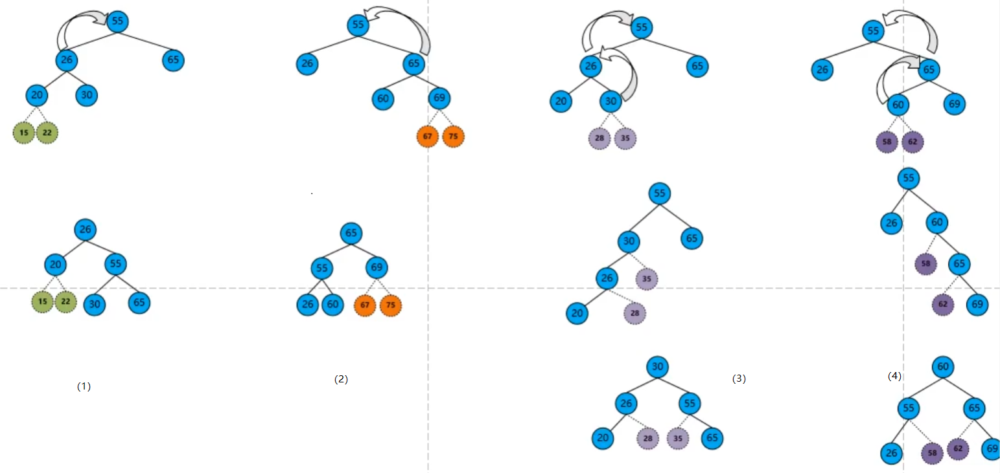

查找算法基础
查找的定义：给定一个值K，在含有N个记录的表中找出关键字等于K的记录。若找到，则查找成功，返回该记录的信息或者该记录在表中的位置；否则查找失败。重要信息：记录和关键字。由于查找算法的基本操作是关键字的比较，并且关键字比较次数与待查找关键字有关（对于一个查找表来说，对其中不同的关键字进行查找，关键字比较次数一般不同），因此通常把查找过程中对关键字的平均比较次数（也称为平均查找长度）作为衡量一个查找算法效率优劣的标准。平均查找长度用ASL来表示。
顺序查找法
顺序查找法是一种最简单的查找方法。基本思路为：顺序遍历线性表，依次将表中数据与给定值K比较。若当前扫描的关键字与K相等，则查找成功；若扫描结束后，仍未发现关键字等于K的记录，则查找失败。
public static int simpleSearch(int array[], int target){
for (int i = 0; i < array.length; i++) {
if(array[i] == target){
return i;
}
}
return -1;
}折半查找法（half-interval search）
也称二分搜索（英语：binary search）、对数搜索（英语：logarithmic search），是一种在有序数组中查找某一特定元素的搜索算法。
搜索过程从数组的中间元素开始，如果中间元素正好是要查找的元素，则搜索过程结束；
如果某一特定元素大于或者小于中间元素，则在数组大于或小于中间元素的那一半中查找，而且跟开始一样从中间元素开始比较。
如果在某一步骤数组为空，则代表找不到。这种搜索算法每一次比较都使搜索范围缩小一半
折半查找法的优点是比较次数少，查找速度快，平均性能好；
其缺点是要求待查表为有序表，且插入删除困难。
因此，折半查找方法适用于不经常变动而查找频繁的有序列表。
public static int Search(int array[], int target){
//把左右下标独立出来
int mid, left, right;
left = 0;
right = array.length - 1;
mid = (left + right) / 2;
while (array[mid] != target) {
//查询断口
if(right - left < 4){
int length = right - left;//返回查询数据量的长度
for (int i = 0; i < length; i++) {
if(array[left] == target){
return left;
}
left++;
}
return -1;//查询失败返回-1
}else if (target > array[mid]) {
//如果目标搜索的数字大于中间的数字，左下标转移到中间下标的下一位
left = mid + 1;
} else if (target < array[mid]) {
//如果目标搜索的数字小于中间的数字，右下标转移到中间下标的前一位
right = mid - 1;
}
mid = (left + right) / 2;//左右下标运算得到新的中间下标
}
return mid;
}折半查找的过程可以用二叉树来表示，得到的二叉树称为描述折半查找的判定树

图e中折半查找判定树的查找成功（ASL1）和不成功（ASL2）的平均查找长度为：
ASL1 = (每层的结点个数层数后相加)/总结点数 = (1\1+2*2+4*3+3*4)/10
ASL2 = (空结点层数-1后相加)/总空结点数 = (5\3+6*4)/11
查找判定树的中序遍历序列与查找表相同
如果mid=(low+high)/2判定树中任何子树的右子树结点数-左子树结点数必为0或1
判定树是一棵平衡的二叉排序树
除了最后一层，判定树其它层的结点一定是满的，查找表为n的判定树高h= [log_2(n+1)]
查找表为n的判定树有n-1个失败叶结点
查找成功和失败的ASL<=树高
算法时间复杂度为o(log_2n)
插值查找（额外）
插值查找，有序表的一种查找方式。
插值查找是根据查找关键字与查找表中最大最小记录关键字比较后的查找方法。
插值查找基于二分查找，将查找点的选择改进为自适应选择，提高查找效率。
对于数据量较大，关键字分布比较均匀的查找表来说，采用插值查找, 速度较快。
关键字分布不均匀的情况下，该方法不一定比折半查找要好
public static int insertSeatch(int array[], int target) {
if (array.length == 0) {
return -1;
}
int left = 0;
int right = array.length - 1;
int mid = -1;
while (left <= right) {
mid = left + (target - array[left]) / (array[right] - array[left]) * (right - left);
if (target > array[mid])
left = mid + 1;
else if (target < array[mid])
right = mid - 1;
else return mid;
}
return -1;
}分块查找（索引顺序查找）
分块查找把线性表分成若干块，每一块中的元素存储循序是任意的，但是块与块之间必须按照关键字大小有序排序，即前一块中的最大关键字要小于后一块中的最小关键字。对顺序表进行分块查询需要额外建立一个索引表，表中的每一项对应线性表中的一块。
方法为：首先确定待查找的元素属于哪一块（索引表比较），然后在块内精确查找该元素。
分块查找实际上进行两次查找，整个算法的平均查找长度是两次查找的平均查找长度之和，即二分查找平均查找长度+顺序查找平均查找长度
二叉排序树（Binary Sort Tree，缩写为BST）
一棵空树，或者是具有下列性质的二叉树：
（1）若左子树不空，则左子树上所有结点的值均小于它的根结点的值；
（2）若右子树不空，则右子树上所有结点的值均大于它的根结点的值；
（3）左、右子树也分别为二叉排序树；
（4）没有键值相等的结点。
输出二叉排序树的中序遍历序列，则这个序列是非递减（非递增）有序的，若不做说明，排序二叉树节点关键字按左小右大分布。折半查找法的判定树是一个二叉排序树，以下为插入二叉排序树的代码
private Node root;//根节点
public void setRoot(Node root) {
this.root = root;
}
/**
* 二叉排序树
* 排序式添加结点，比根大的放右边，比根小的放左边
*/
public void sortAdd(Node node) {
isBST = true;
Map parent = new HashMap();
if(root==null){
// System.out.println(node.getValue()+" set root");
setRoot(node);
parent = null;
node.setParent(parent);
}else{
if(node.getValue().hashCode() < root.getValue().hashCode()){
//该节点的值比根小，搜索左子树
if(root.getLeft()!=null){
Node root = this.root;
setRoot(root.getLeft());
// System.out.println(this.root.getValue()+" go left");
sortAdd(node);
setRoot(root);
}else{
// System.out.println(node.getValue()+" set left");
root.setLeft(node);
parent.put(0,root);
node.setParent(parent);
}
}else if(node.getValue().hashCode() > root.getValue().hashCode()){
//该节点的值比根大，搜索右子树
if(root.getRight()!=null){
Node root = this.root;
setRoot(root.getRight());
// System.out.println(this.root.getValue()+" go right");
sortAdd(node);
setRoot(root);
}else{
// System.out.println(node.getValue()+" set right");
root.setRight(node);
parent.put(1,root);
node.setParent(parent);
}
}
}
}关于如何删除二叉排序树的结点：
- 如果树只有根结点，并且待删除的结点就是根结点
- 如果待删除的结点是叶结点，直接删除，不会破坏二又排序树的性质。
- 如果待删除的结点只有左子树或右子树，则让子树代替自己。
- 如果待除的结点有左子树和右子树，让左子树最右侧的结点代替自己，然后删除左子树最右侧的结点。（也可以让石子树最左侧的结点代替自己，然后除石子树最左侧的结点。）
/**
* 二叉排序树
* 删除节点，并且删除节点后保持二叉排序树的性质
* 若不是二叉排序树，不会删除任何节点
* 若不存在结点，不删除任何节点
*/
public void sortDel(Node node){
Node current = search(node);
if(isBST == false){
System.out.println("This tree is not BST(Binary Sort Tree)");
}else if(current != null && isBST == true){
/* 如果树只有根结点，并且待删除的结点就是根结点 */
if(root.getValue().hashCode() == current.getValue().hashCode() && root.getRight() == null && root.getLeft() == null){
System.out.println("This tree only has a root node,this node is root,so delete it");
root = null;
current = null;
}
/* 如果待删除的结点是叶结点，直接删除，不会破坏二又排序树的性质 */
if(root.getValue().hashCode() != current.getValue().hashCode() && root.getRight() == null && root.getLeft() == null){
System.out.println("This node is leaf node,delete it");
Map<Integer,Node> parentmap = getParentMap(current);
if(parentmap.get(0)!= null){
parentmap.get(0).setLeft(null);
}else{
parentmap.get(1).setRight(null);
}
}
/* 如果待删除的结点只有左子树或右子树，则让子树代替自己。 */
if(current.getLeft()!= null && current.getRight() == null){
System.out.println("This node only have left tree,delete this node and replace with left tree");
Map<Integer,Node> parentmap = getParentMap(current);
if(parentmap.get(0)!= null){
parentmap.get(0).setLeft(current.getLeft());
}else{
parentmap.get(1).setRight(current.getLeft());
}
}
if(current.getLeft()== null && current.getRight() != null){
System.out.println("This node only have right tree,delete this node and replace with right tree");
Map<Integer,Node> parentmap = getParentMap(current);
if(parentmap.get(0)!= null){
parentmap.get(0).setLeft(current.getRight());
}else{
parentmap.get(1).setRight(current.getRight());
}
}
/* 如果待除的结点有左子树和右子树，让左子树最右侧的结点代替自己，然后删除左子树最右侧的结点。
（也可以让石子树最左侧的结点代替自己，然后除石子树最左侧的结点。）*/
if(current.getLeft()!= null && current.getRight() != null){
System.out.println("This node both have left and right tree,delete this node and replace with right tree");
Map<Integer,Node> parentmap = getParentMap(current);
if(parentmap.get(0)!= null){
parentmap.get(0).setLeft(current.getRight());
current.getRight().setLeft(current.getLeft());
}else{
parentmap.get(1).setRight(current.getRight());
current.getRight().setLeft(current.getLeft());
}
}
}else{
System.out.println("Can not find this node in the tree,cant delete this node");
}
}如果二又排序树高为h,最下层结点的查找长度为h,查找操作的时间复杂度为O(h)
具有n个(n>0)结点的二叉树的最小高度为log_2(n+1)或log_2n+1。最大高度为n
最好的情况：平均查找长度=O(log_2n)
最坏的情况：平均查找长度=O(n)
平衡二叉树(Balanced Binary Tree)
简称平衡树(AVLG. MAdelson-velsky、E.M. Landis),是一种特殊的二叉排序树。它实现了较高的查找效率，发现树越矮查找效率越高，进而发明了平衡二叉树。树上任意结点的左子树和右子树的深度之差不超过1
结点的平衡因子=左子树的高度-右子树的高度
在二叉排序树中插入和删除结点后，只需要调整最小不平衡子树，整棵树将恢复平衡。
最小平衡子树有四种情况（LL，RR，LR，RL）：
- LL：左左更高，整棵树向右旋转（右单旋转调整）
- RR：右右更高，整棵树向左旋转（左单旋转调整）
- LR：左右更高，左子树先向左旋转，后将整棵树向右旋转（先左后右双旋转调整）
- RL：右左更高，右子树先向右旋转，后将整棵树向左旋转（先右后左双旋转调整）

散列（Hash，也叫哈希）表
散列表，又叫哈希表（Hash Table），是能够通过给定的关键字的值直接访问到具体对应的值的一个数据结构。也就是说，把关键字映射到一个表中的位置（地址）来直接访问记录，以加快访问速度。
在哈希查找过程中，要解决两方面的问题，分别是构造哈希函数和处理冲突。评判一个散列函数优劣的两个主要条件是值均匀分布与表空间以减少冲突和函数尽可能简单以方便计算
评价哈希表的标准是：哈希表内数值分部是否均匀
private Node[] hash_table;
private int remain;
public HashTable(int tableLength){
initTable(tableLength);
remain = tableLength;
}
public void initTable(int tableLength){
hash_table = new Node[tableLength];
}
public String hash_table_toString(){
StringBuffer sb = new StringBuffer();
sb.append("HashTable:[");
for (int i = 0; i < hash_table.length; i++) {
if(hash_table[i] == null){
sb.append("index: "+i+" value: "+"null");
}
else if(hash_table[i]!=null && hash_table[i].getNext() == null){
sb.append("index: "+i+" value: "+hash_table[i].getValue());
}
else if(hash_table[i]!=null && hash_table[i].getNext() != null){
LinkedList<Node> queue = new LinkedList<Node>();
queue.offer(hash_table[i]);
while (!queue.isEmpty()){
Node pollNode = queue.poll();
sb.append("index: "+i+" value: "+pollNode.getValue());
sb.append("-->");
if(pollNode.getNext()!=null){ //出队队头元素并访问，若不为空指针，则将下一个结点拿出来，放到队列里面
queue.offer(pollNode.getNext());
}else if(pollNode.getNext()==null){
break;
}
}
}
sb.append(","+"\n");
}
sb.delete(sb.length()-1,sb.length());
sb.append("]");
return sb.toString();
}下面简单介绍几种哈希函数。
- 直接寻址法：取关键字或关键字的某个线性函数值为散列地址。
- 数字分析法：通过对数据的分析，发现数据中冲突较少的部分，并构造散列地址。例如同学们的学号，通常同一届学生的学号，其中前面的部分差别不太大，所以用后面的部分来构造散列地址。
- 平方取中法：当无法确定关键字里哪几位的分布相对比较均匀时，可以先求出关键字的平方值，然后按需要取平方值的中间几位作为散列地址。这是因为：计算平方之后的中间几位和关键字中的每一位都相关，所以不同的关键字会以较高的概率产生不同的散列地址。
- 取随机数法：使用一个随机函数，取关键字的随机值作为散列地址，这种方式通常用于关键字长度不同的场合。
- 除留取余法：取关键字被某个不大于散列表的表长 n 的数 m 除后所得的余数 p 为散列地址。这种方式也可以在用过其他方法后再使用。该函数对 m 的选择很重要，一般取素数或者直接用 n。
/**
* 除留余数法构造Hash(hash为哈希表的下标/地址)
* @param key
*/
public int bulidHash(int key){
return key%remain;
}散列表的特点
散列表有两种用法：一种是 Key 的值与 Value 的值一样，一般我们称这种情况的结构为 Set（集合）；而如果 Key 和 Value 所对应的内容不一样时，那么我们称这种情况为 Map，也就是人们俗称的键值对集合。
根据散列表的存储结构，我们可以得出散列表的以下特点。
1) 访问速度很快
由于散列表有散列函数，可以将指定的 Key 都映射到一个地址上，所以在访问一个 Key（键）对应的 Value（值）时，根本不需要一个一个地进行查找，可以直接跳到那个地址。所以我们在对散列表进行添加、删除、修改、查找等任何操作时，速度都很快。
2) 需要额外的空间
首先，散列表实际上是存不满的，如果一个散列表刚好能够存满，那么肯定是个巧合。而且当散列表中元素的使用率越来越高时，性能会下降，所以一般会选择扩容来解决这个问题。另外，如果有冲突的话，则也是需要额外的空间去存储的，比如链地址法，不但需要额外的空间，甚至需要使用其他数据结构。
这个特点有个很常用的词可以表达，叫作“空间换时间”，在大多数时候，对于算法的实现，为了能够有更好的性能，往往会考虑牺牲些空间，让算法能够更快些。
3) 无序
散列表还有一个非常明显的特点，那就是无序。为了能够更快地访问元素，散列表是根据散列函数直接找到存储地址的，这样我们的访问速度就能够更快，但是对于有序访问却没有办法应对。
4) 可能会产生碰撞
没有完美的散列函数，无论如何总会产生冲突，这时就需要采用冲突解决方案，这也使散列表更加复杂。通常在不同的高级语言的实现中，对于冲突的解决方案不一定一样。
常用Hash解决冲突的办法
- 拉链法/链地址法：链地址法其实就是对Key通过哈希之后落在同一个地址上的值，做一个链表。其实在很多高级语言的实现当中，也是使用这种方式处理冲突的。
/**
* 拉链法存储Hash
* 将Hash映射到表中
*/
public Node[] zipperSave(T key){
Node node = new Node();
node.setValue(key);
int hash = bulidHash(Integer.parseInt(String.valueOf(node.getValue())));//构建hash
if(hash_table[hash]!=null){
LinkedList<Node> queue = new LinkedList<Node>();
queue.offer(hash_table[hash]);//将
while (!queue.isEmpty()){
Node pollNode = queue.poll();
if(pollNode.getNext()!=null){ //出队队头元素并访问，若不为空指针，则将下一个结点拿出来，放到队列里面
queue.offer(pollNode.getNext());
}else if(pollNode.getNext()==null){
pollNode.setNext(node);
}
}
}else{
hash_table[hash] = node;
}
return hash_table;
}
/**
* 使用拉链法后，快速搜索哈希表
*/
public Node<T> zipperGetValue(T key){
int hash = bulidHash(Integer.parseInt(String.valueOf(key)));//构建hash
if(hash_table[hash]!=null){
LinkedList<Node> queue = new LinkedList<Node>();
queue.offer(hash_table[hash]);
while (!queue.isEmpty()){
Node pollNode = queue.poll();
if(pollNode.getValue().hashCode() == key.hashCode()){
return pollNode;
}
if(pollNode.getNext()!=null){ //出队队头元素并访问，若不为空指针，则将下一个结点拿出来，放到队列里面
queue.offer(pollNode.getNext());
}else if(pollNode.getNext()==null){
queue.poll();
}
}
}
return null;
}- 线性探索法：在开放定址算法里，线性探测法是散列解决冲突的一种方法，当hash一个关键字时，发现没有冲突，就保存关键字， 如果出现冲突，则就探测冲突地址下一个地址，依次按照线性查找，直到发现有空地址为止，从而解决冲突，
例如 关键字集合{7、8、30、11、18、9、14}，散列函数为：H(key) = (keyx3) MOD 7， 设装填因子（元素个数/散列表长度）为0.7，那么 散列表的长度为 10。
关键字（key）集合存放位置分别为：
| 7 | 8 | 30 | 11 | 18 | 9 | 14 |
|---|---|---|---|---|---|---|
| 0 | 3 | 6 | 5 | 5 | 6 | 0 |
由表格知道，这里的7和14、30和9、11和18出现了位置存放冲突。存放key=7时，散列表长度为10的表中其实没有冲突， 因为7是第一个存在到表中的key，所以一定不会有冲突的，所以7对应散列表的地址0。8、30、11存放的地址分别是3、 6 、5，但是到了key=18时候，发现存放的地址为5，而地址5已经存放了key=11,这时发生了地址冲突。根据线性探测法，算法会探测地址5的下一个地址，即地址6，而此时地址6已经存放了key=30，程序继续探测下一个地址，发现地址7位空，此时把key=18存放到地址7处。以此类推，最后得出的散列表为：
| 0 | 1 | 2 | 3 | 4 | 5 | 6 | 7 | 8 | 9 |
|---|---|---|---|---|---|---|---|---|---|
| 7 | 14 | 8 | 11 | 30 | 18 | 9 |
成功查找率：（1+1+1++1+3+3+2）/ 7
不成功查找率
计算查找不成功的次数就直接找关键字到第一个地址上关键字为空的距离即可， 但根据哈希函数地址为MOD7，因此初始只可能在0~6的位置。等概率情况下，查找0~6位置查找失败的查找次数为：
地址0，到第一个关键字为空的地址2的距离为3，因此查找不成功的次数为3.
地址1， 到第一个关键为空的地址2的距离为2，因此查找不成功的次数为2.
地址2， 到第一个关键为空的地址2的距离为1，因此查找不成功的次数为1.
地址3，到第一个关键为空的地址4的距离为2，因此查找不成功的次数为2.
地址4，到第一个关键为空的地址4的距离为1，因此查找不成功的次数为1.
地址5，到第一个关键为空的地址2(注意不是地址9，因为初始只可能在0~6之间，因此循环回去)的距离为5，因此查找不成功的次数为5.
地址6，到第一个关键为空的地址2(注意不是地址9，因为初始只可能在0~6之间，因此循环回去)的距离为4，因此查找不成功的次数为4.
不成功查找率：（3+2+1+2+1+5+4）/7
- 平方探测法
时间复杂度总结
| 查找找 | 平均时间复杂度 | 查找条件 | 算法描述 |
|---|---|---|---|
| 顺序查找 | O(n) | 无序或有序队列 | 按顺序比较每个元素，直到找到关键字为止 |
| 二分查找（折半查找） | O(logn) | 有序数组 | 查找过程从数组的中间元素开始，如果中间元素正好是要查找的元素，则搜素过程结束；如果某一特定元素大于或者小于中间元素，则在数组大于或小于中间元素的那一半中查找，而且跟开始一样从中间元素开始比较。 如果在某一步骤数组为空，则代表找不到。 |
| 二叉排序树查找 | O(logn) | 二叉排序树 | 在二叉查找树b中查找x的过程为：1. 若b是空树，则搜索失败2. 若x等于b的根节点的数据域之值，则查找成功；3. 若x小于b的根节点的数据域之值，则搜索左子树4. 查找右子树。 |
| 哈希表法（散列表） | O(1) | 先创建哈希表（散列表） | 根据键值方式(Key value)进行查找，通过散列函数，定位数据元素。 |
| 分块查找 | O(logn) | 无序或有序队列 | 将n个数据元素”按块有序”划分为m块（m ≤ n）。每一块中的结点不必有序，但块与块之间必须”按块有序”；即第1块中任一元素的关键字都必须小于第2块中任一元素的关键字；而第2块中任一元素又都必须小于第3块中的任一元素，……。然后使用二分查找及顺序查找。 |
ASL分析
第一个表达式为成功的ASL，第二个为失败的ASL
顺序查找法：(n+1)/2；n
折半查找法：转换为折半查找判定二叉树，将线性表的中间分别拆开，比根小的放左边，比根大的放右边；（第一层结点个数1+第二层结点个数\2+…+第n层结点个数*n）/结点总数；（第2层空结点总数*1+第3层空结点总数*2+第4层空结点总数*3+..+第n层空结点总数*n-1）/结点总数
分块查找法：ASL(折半查找法)+ASL(顺序查找法)
二叉排序树：ASL(折半查找法)
哈希表（散列表）查找法：线性探查法：每个元素被访问（查找）的次数相加/关键字个数，每个地址由开始到空位置位置所要发生比较操作的地址相加/地址总数（eg：0 -> null 1；1 -> null 1、2、3 3）
本博客所有文章除特别声明外，均采用 CC BY-SA 4.0 协议 ，转载请注明出处！